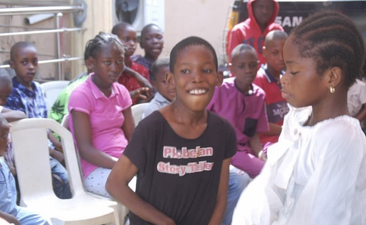
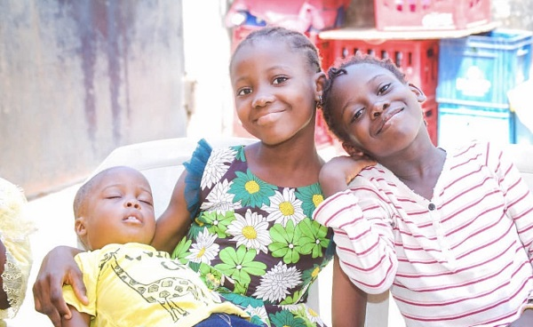
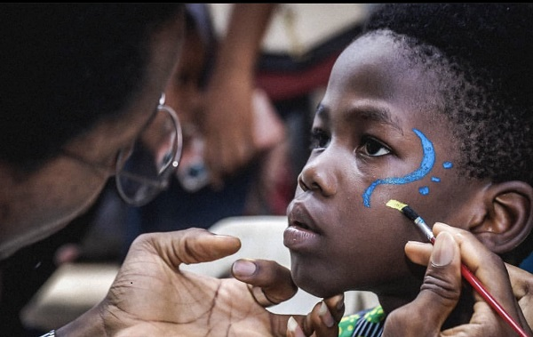
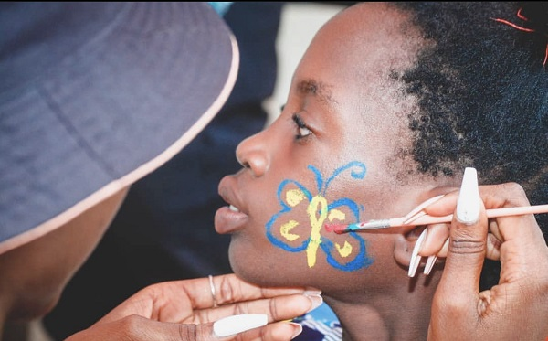
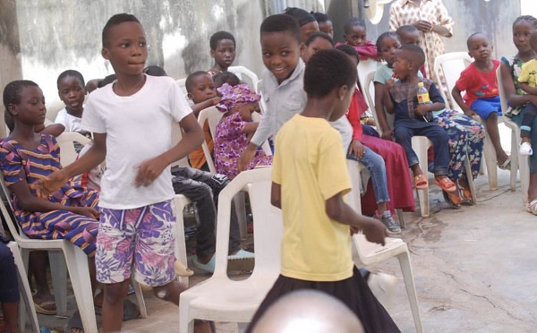

Here's a glimpse of how the last school project went, because of you, we were able to change the school shoe of specific children who had nothing to wear or had bad shoes. This year school project is bigger, we intend to reach out students and adopt children who are financially incapable to pay for their tuition fee!
Here's a glimpse of how the last school project went, because of you, we were able to change the school shoe of specific children who had nothing to wear or had bad shoes. This year school project is bigger, we intend to reach out students and adopt children who are financially incapable to pay for their tuition fee!

Here's a glimpse of how the last school project went, because of you, we were able to change the school shoe of specific children who had nothing to wear or had bad shoes. This year school project is bigger, we intend to reach out students and adopt children who are financially incapable to pay for their tuition fee!

Here's a glimpse of how the last school project went, because of you, we were able to change the school shoe of specific children who had nothing to wear or had bad shoes. This year school project is bigger, we intend to reach out students and adopt children who are financially incapable to pay for their tuition fee!

Here's a glimpse of how the last school project went, because of you, we were able to change the school shoe of specific children who had nothing to wear or had bad shoes. This year school project is bigger, we intend to reach out students and adopt children who are financially incapable to pay for their tuition fee!

Here's a glimpse of how the last school project went, because of you, we were able to change the school shoe of specific children who had nothing to wear or had bad shoes. This year school project is bigger, we intend to reach out students and adopt children who are financially incapable to pay for their tuition fee!

Here's a glimpse of how the last school project went, because of you, we were able to change the school shoe of specific children who had nothing to wear or had bad shoes. This year school project is bigger, we intend to reach out students and adopt children who are financially incapable to pay for their tuition fee!
SKHI have been involved in so many outreach. This may sound cliche but love and peace is what the world needs. A little kind act everyday will make a world a betterter place. Here at SKHL the prosperity of humanity is our business, A kind act everyday.
Do welcome to the official website of STREET KIDS HELPING INITIATIVE(SKHI). A youth-driven NGO dedicated to improving the welfare of Nigeria's street children. Spreading LOVE to the street.
Major Projects:
Tech Tour
- Tech Tour is a Project with the main aim of educating and empowering children in rural areas with tech skills and basic computer knowledge. It is under the SDG-17 goals(no 4). Over the years we have reached out to over 600 children through tech Tour, teaching and empowering them with the knowledge of Tech in a fast-paced world like ours.
Girl Project(Pada Girl)
- This Project is aimed at the total provision of Sanitary Products for girls in rural areas who cannot afford to take care of these needs due to the high rate of poverty in their region. It is also aimed at educating them about sexual awareness and how to protect themselves from all sorts of abuse. Over the past three years, we have donated and provided sanitary items to over 1,000 girls in Lagos Nigeria, and also provided counseling sessions for girls experiencing sensitive situations.
The School Project
- The school Project by the SDG-17 goals by the UN is aimed at making education less stressful and more accessible for children on the streets and in Rural Areas. Its main focus is aimed at providing materials and also catering to the needs of children who cannot afford education.
The Christmas Outreach
- The Project is dedicated to children on the streets during the festive period. It serves as a relief and support system for the children. Food items and clothing gifts are given out and a party is thrown for the children.
.JPG)